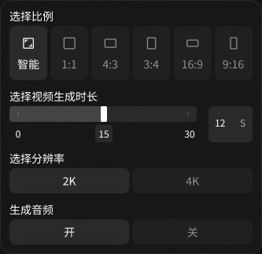

1 · 视频参数面板（A01 + A02）两张图同一比例


| # | 哪里 | Figma | 网站 |
|---|---|---|---|
| ① | 比例选项 | 6 个竖卡片，每个自己带底（平时白 4%，选中白 8%），卡片之间有缝 | 一条整体底槽，里面 6 格，选中格白 12% |
| ② | 小标题颜色 | 白 100% | 白 60%（偏灰） |
| ③ | 时长数值框 | 「12 S」数字和单位一起居中 | 数字靠左、S 靠右 |
| ④ | 滑块到数值框 | 15 | 12 |
| ⑤ | 滑块当前刻度数字（A08） | 刻度下只写 0、15、30，当前值 15 加小底框标出来；刻度数字白 100%（图里滑块在 15、数值框写 12，示意没对上） | 刻度下写 0、10、20、30，白 50%；当前值不在刻度下标，只在右边数值框 |
| ⑥ | 分辨率、生成音频 | 两个独立按钮，各自带底 | 一条底槽，里面两格 |